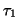
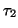
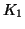

Next: Parameters for the Automatic
Up: Virtual AFM Box
Previous: Parameters for the Phase
Contents
Parameters of PLL:

, 
(both in s), gain factors
and 
(see Eqs. (25)-(29)
in section 2.1.3).
Parameters: , , ,
Default: 5.0d-5, 1.6d-4, 6.0, 220.0
Example: PLL_FMdem{t1,t2,gainPB,K1}
5.5d-5 1.6d-4 6.d0 500.d0
Lev Kantorovich
2005-08-04